This page collects selected digital fabrication projects that connect computational design with physical making, from robotic toolpaths and pick-and-place experiments to CNC-produced, full-scale plywood structures.
ROBOTISM: Robotic Fabrication Workshop (Pick & Place + Light Painting)
Workshop project • Group work • KUKA KR6 (KRC2/KRL) • Rhino/Grasshopper toolpaths
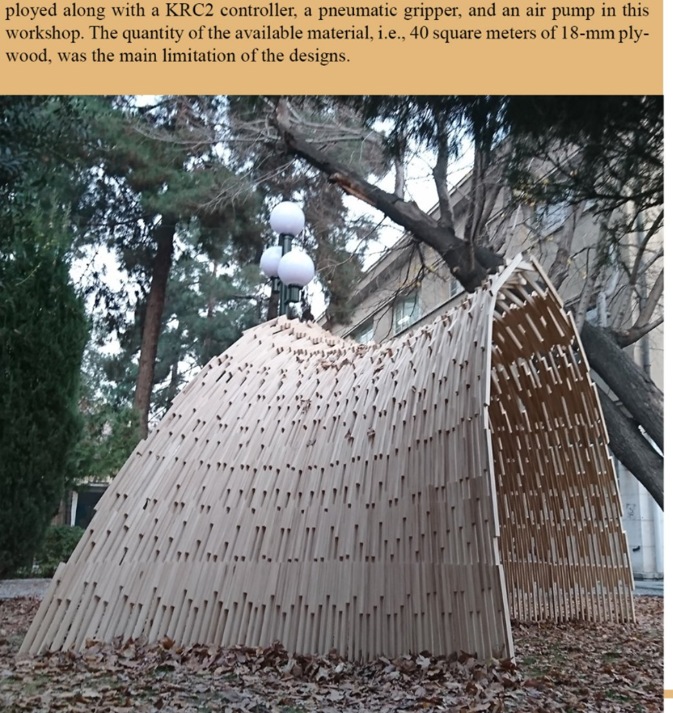
Summary
ROBOTISM is a 10-day workshop project in robotic fabrication and computational design. Working in teams, we learned the fundamentals of robot programming and toolpath thinking, then applied them in two tracks: (1) light painting using robot-generated motion paths, and (2) pick-and-place fabrication using a KUKA KR6 equipped with a pneumatic gripper. The final outcome was a full-scale plywood pavilion assembled from robot-placed components and completed with a collaborative human–robot fastening workflow.
KUKA KR6KRC2 + KRLRhino + GrasshopperG-codePick & Place18mm plywood
Project at a glance
Context
Workshop project • Group work • Robotic fabrication + computational design
Institution: University of Tehran
Role: Design, software, and fabrication
Robot platform: KUKA KR6 with KRC2 controller
End-effector: Pneumatic gripper + air pump system
Key constraints
Material limit: ~40 m² of 18mm plywood
Robot reach: ~1.6 m (influenced segmentation and assembly planning)
Process requirement: collision-aware paths and stable intermediate states
Outcomes
Light-painted drawings generated from Grasshopper-defined curves and robot motion paths
Pick-and-place prototypes exploring stability, stacking logic, and assembly sequencing
A fabricated pavilion split into 9 transportable sections and assembled on campus
Workshop process
The workshop began with an introduction to KRL syntax and the fundamentals of generating machine-readable motion instructions. After the initial training, we worked in small groups through a sequence of exercises aimed at building intuition for toolpaths, robot constraints, and fabrication-ready geometry.
1) Toolpath thinking
We practiced defining continuous motion paths and understanding how speed, continuity, and reach constraints shape what is fabricable.
2) From parametric curves to motion
Curves were authored in Rhino/Grasshopper, then translated into robot-readable instructions (G-code/KRL workflow depending on the exercise).
3) Physical validation
Each digital path/sequence was validated in the real workspace—checking collisions, grip reliability, and whether the assembly remains stable during placement.
Exercise 1: Light painting
For the first exercise, we defined continuous curve patterns in Grasshopper 3D and used them to generate a robot motion path. After producing the corresponding instructions, we mounted a simple LED on the robot head and captured long-exposure photographs while the robot traced the curves in space.
Light painting in the lab using an LED tool mounted on the robot.
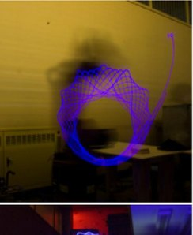
Parametric curve pattern translated into robot motion.
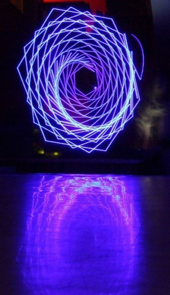
Exploring continuity, speed, and curvature in a single uninterrupted path.
Exercise 2: Pick & place prototypes
In the next exercise, each group designed a structure using wooden pieces with fixed dimensions and counts. The objective was to assemble the structure via pick-and-place while ensuring stability throughout the sequence—prioritizing an assembly logic that could stand without relying on screws or glue during placement.
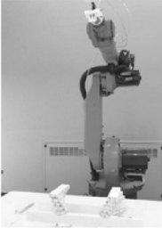
Early stacking tests to verify grip, alignment tolerance, and stability.
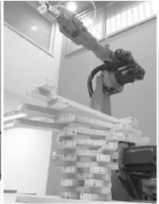
Sequencing matters: stable intermediate states reduce failure during placement.
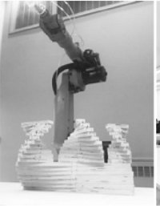
Iterating on geometry and stacking logic to increase height while maintaining balance.
Final product: Plywood pavilion
After the introductory tasks, teams proposed pavilion concepts at the scale of 1:1. Given the available material (~40 m² of 18mm plywood), designs were reviewed by a jury and one concept was selected for fabrication. The final design was refined and prepared for robotic assembly.
Segmentation + assembly planning
Because the robot reach was limited (~1.6 m) and the build site introduced placement constraints, the arch was divided into transportable sections. The strategy was to halve the arch and split the halves into 4 and 5 parts (a total of 9 sections).
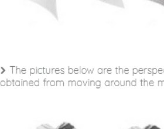
Surface
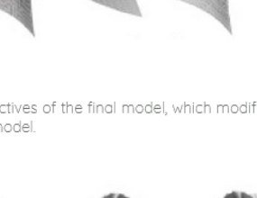
Contoured surface
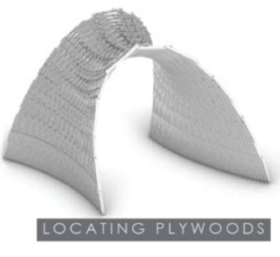
Locating plywoods
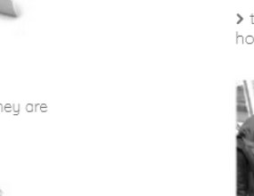
The nine sections
Connection strategy
Two approaches were explored for connecting pieces during assembly: (1) a robotic gluing routine using a glued roller, or (2) a collaborative workflow where a person fastens parts after robot placement using a pneumatic nail gun. Due to time constraints and practical considerations, the collaborative method was selected for the final build.
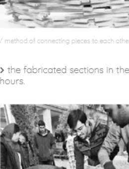
Robotic placement along the pavilion curve with a human-in-the-loop fastening strategy.
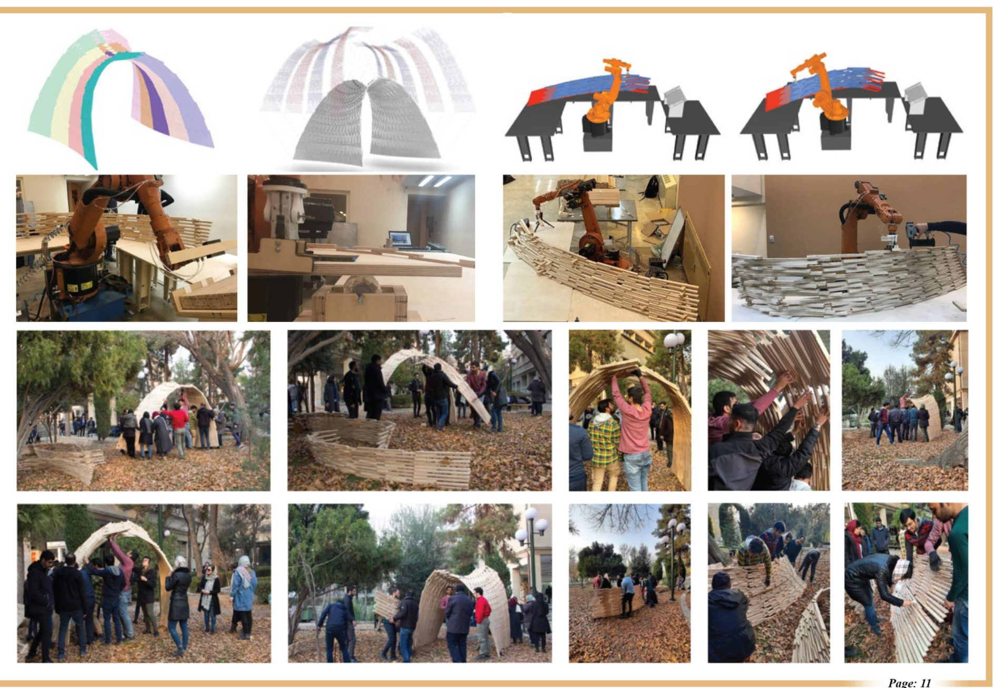
Process montage: simulation views, workshop fabrication scenes, and on-site installation steps.
On-site installation
The fabricated sections were transported to campus and assembled on site. Installation was completed in approximately two hours, demonstrating how up-front planning (segmentation, sequencing, and connection strategy) can make large-scale fabrication workflows feasible within tight workshop timelines.
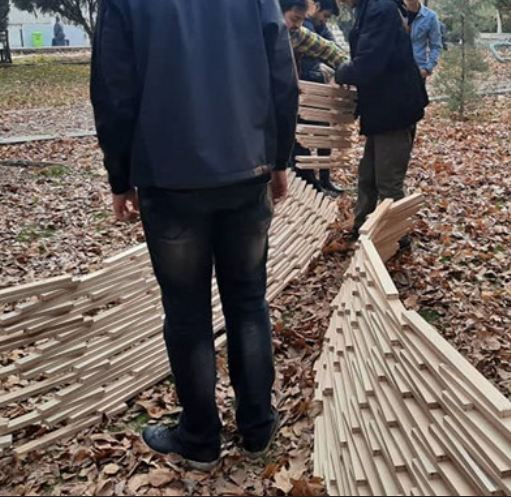
Transporting and positioning a fabricated section.
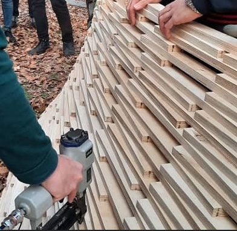
Collaborative assembly: alignment + fastening during installation.
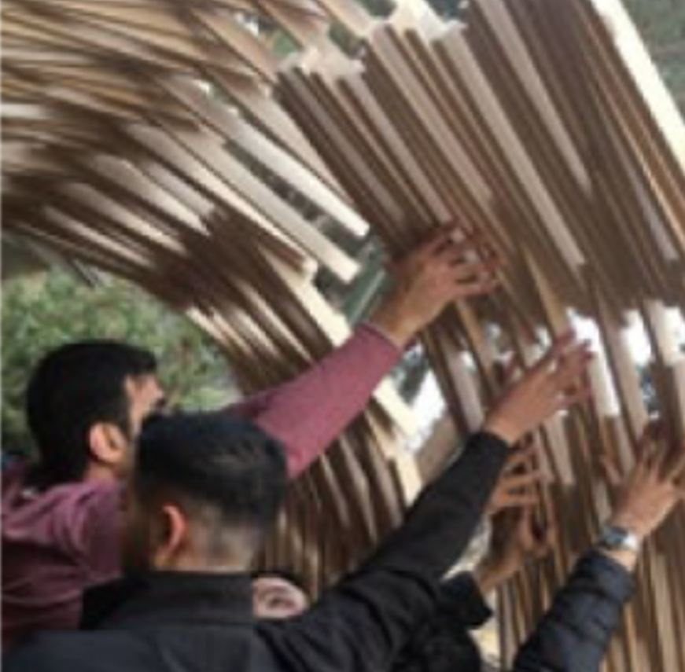
Final adjustments as the pavilion geometry is locked in place.
What this project demonstrates
Bridging parametric design and fabrication
Parametric geometry becomes fabrication-ready only when translated into stable sequences, tolerances, and collision-aware robot motions.
Designing for constraints
Robot reach, end-effector behavior, and material limits directly shape form, segmentation, and assembly strategy.
Human–robot collaboration
Hybrid workflows (robot placement + human fastening) can be a practical solution for time-limited contexts such as workshops and rapid prototyping.
Team: Group work (design + programming + fabrication)
INTEGRITY: Nexorade Plywood Pavilion
Academic project • Group work • University of Art • Role: conceptualization, fabrication
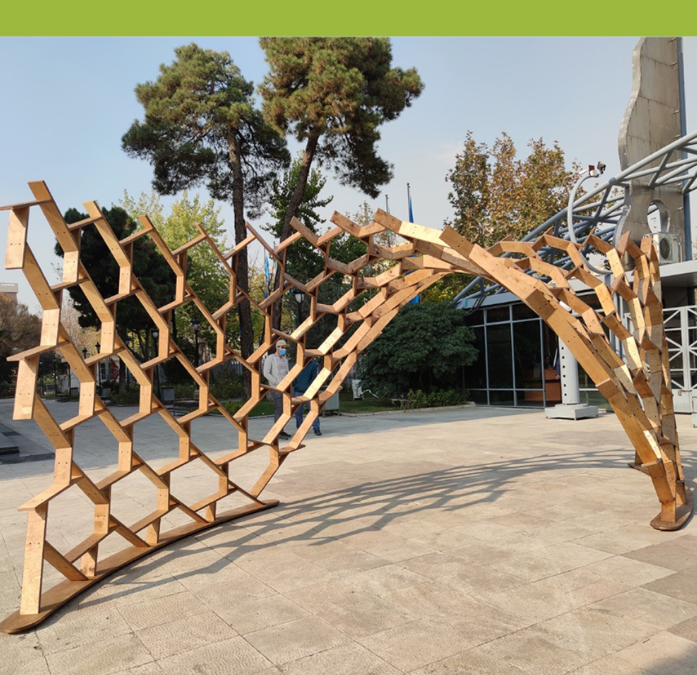
Summary
INTEGRITY is a full-scale plywood pavilion developed as a digital fabrication project using a Nexorade structural logic. The project was designed and tested digitally, produced from 18 mm plywood sheets using CNC cutting, and assembled on site using screwed connections (no adhesives).
Role: Conceptualization, design development, and fabrication
Supervisor: Ph.D. Seyed Ali Deragisoo (et al.)
Material + making
Material: 18 mm plywood sheets
Production: CNC-based digital fabrication
Assembly: screw-fastened elements and on-site installation
Goal
Translate a parametric surface into a buildable lattice
Develop repeatable element logic and connection details
Validate constructability through full-scale prototyping and assembly
Parametric workflow
The digital pipeline starts with defining main curves and a guiding surface, then generating a lattice pattern that is adjusted by rotating and extending elements to achieve structural continuity. Element geometry and connection details are finalized to support straightforward assembly and accurate positioning during fabrication.
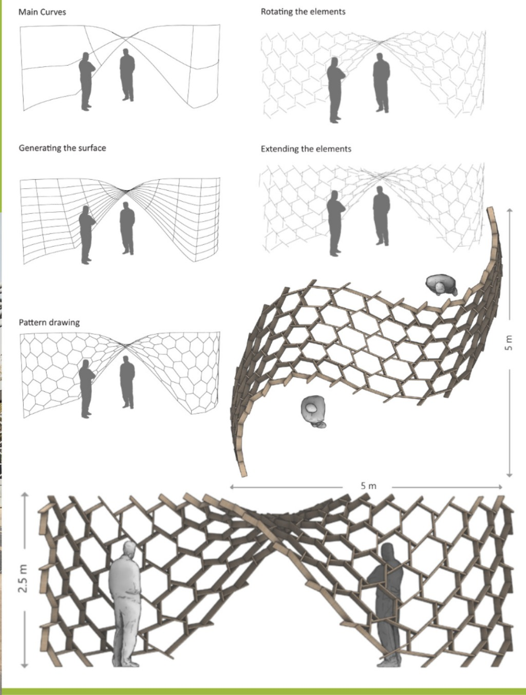
Diagram sequence: curves → surface → pattern → element rotation/extension → pavilion form.
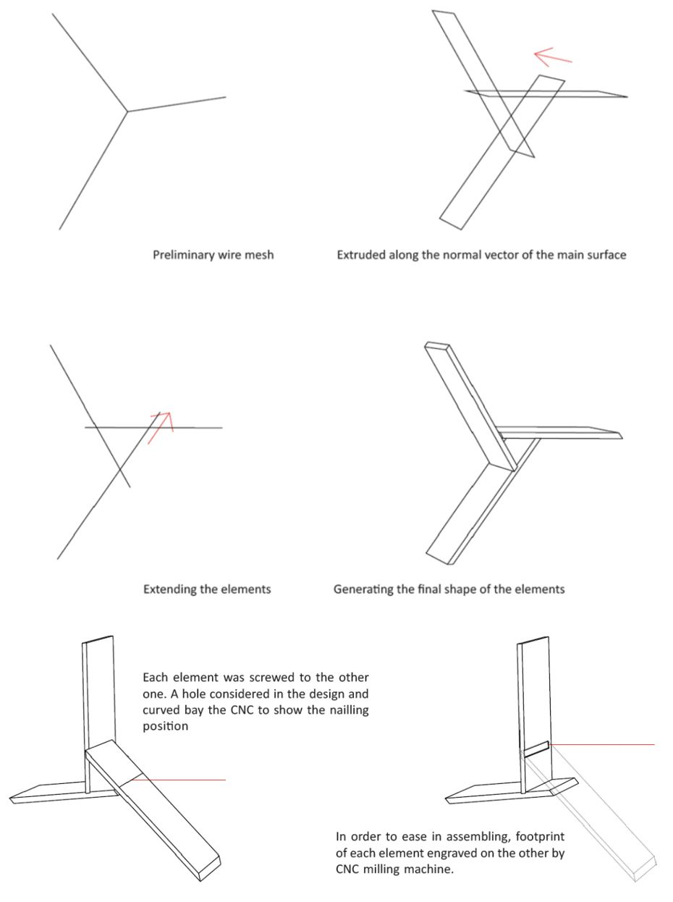
Element development: extrusion along surface normals, extension logic, and final element shaping for assembly.
Fabrication and assembly
After digital testing and finalization, elements were produced and labeled for assembly. CNC milling supported accurate cuts and alignment features, while the on-site build relied on screw fastening and coordinated lifting/positioning to form the final pavilion geometry.
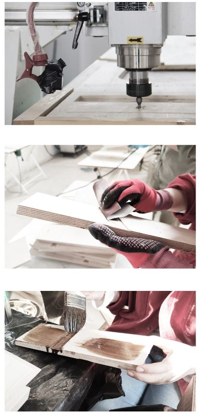
CNC cutting/milling used to produce plywood components.
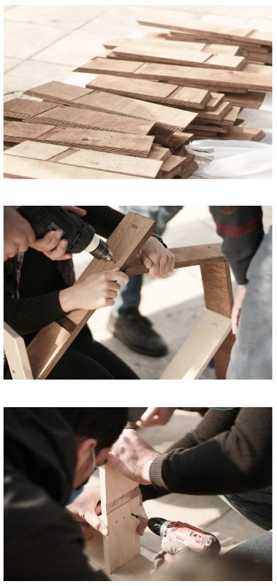
Assembly procedure.
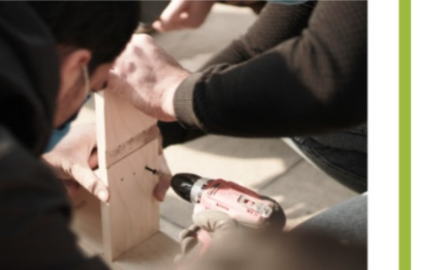
On-site positioning to complete the final structure.
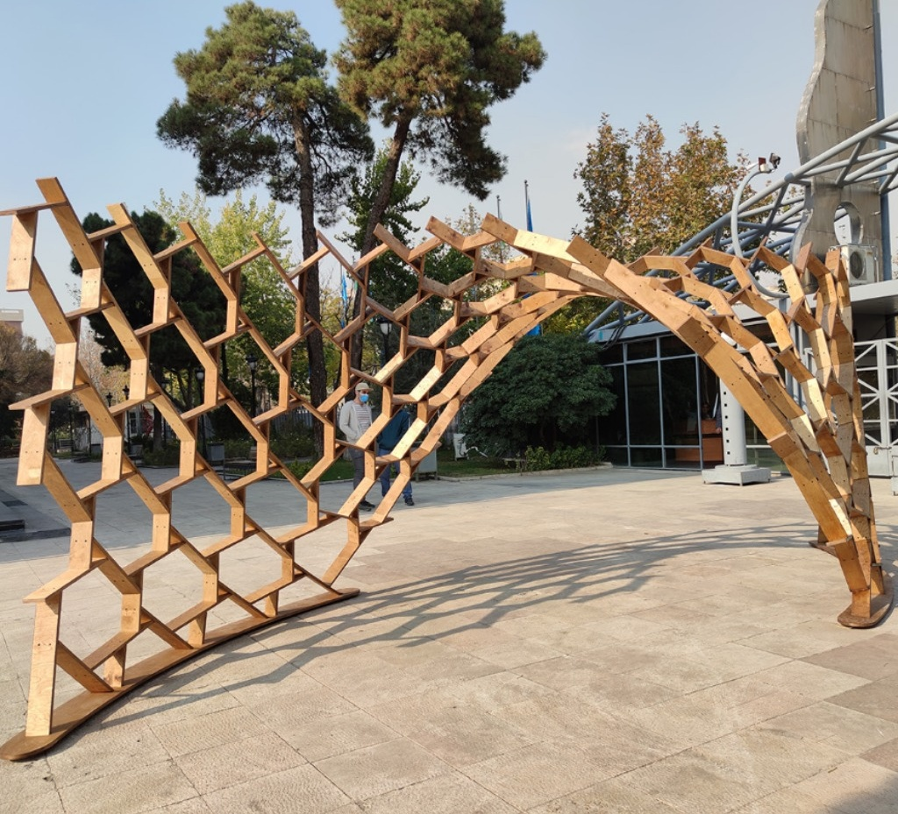
Detail view: Nexorade lattice geometry and repetitive element logic that supports the global form.
CLIMATE‑RESPONSIVE FACADE (CRF): Biomimetic Kinetic Shading Inspired by Chameleon Eyes
Academic project
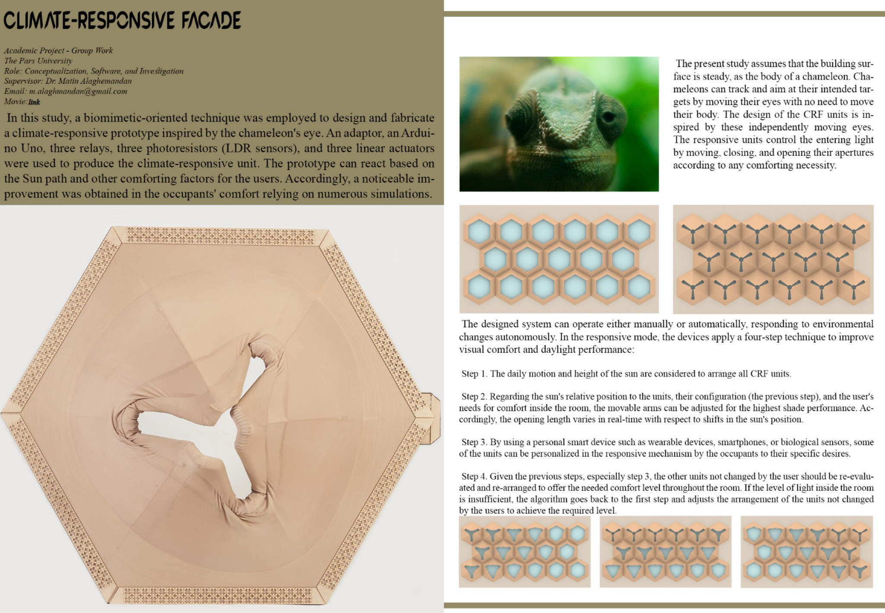
Summary
Climate‑Responsive Façade (CRF) is a biomimetic, textile-based kinetic envelope prototype designed to improve visual comfort (daylight quality + glare control) in hot and arid climates. Inspired by how chameleons move their eyes independently, each façade module can adjust its aperture and orientation in real time, enabling localized shading responses for different zones behind the same façade.
The workflow connects parametric design (Rhino/Grasshopper + Python) to daylighting simulations (ClimateStudio/Radiance), then validates the system through a physical prototype actuated by linear actuators and controlled via an Arduino with LDR light sensors. The result is a façade concept that offers granular control over daylight penetration while preserving openness and reducing discomfort glare.
Skin: stretch textile that tolerates multi-direction movement while staying taut
Control modes: manual (user-defined) and responsive (sensor + sun-path driven)
Biomimetic idea and module behavior
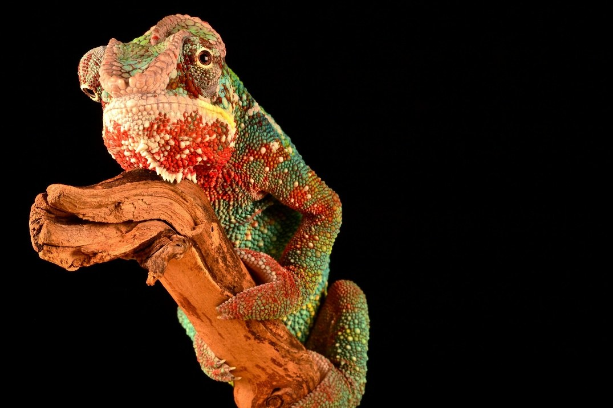
Biomimetic reference: chameleons track targets with independently moving eyes, inspiring independent module motion across the facade.Each hexagonal unit can open/close its aperture by coordinating three movable arms against a fixed frame.
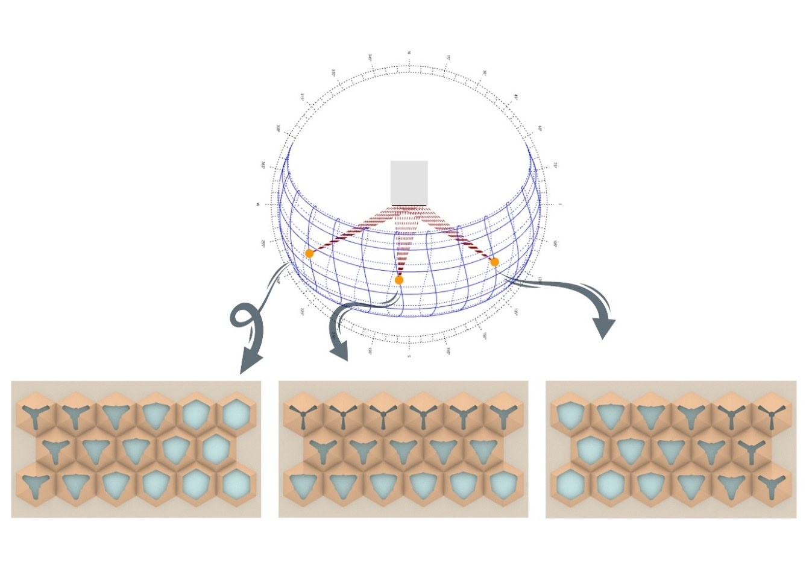
Sun-path driven configuration studies that map solar angles to module states.
Physical prototype: actuation + textile behavior
The prototype validates real-time adaptability using a lightweight structure and a stretch-fabric skin. Three linear actuators drive the movable arms of each unit; LDR sensors read local light levels and feed the controller; and an Arduino UNO coordinates actuation through relays. The stretch textile accommodates multi-direction motion while maintaining continuous surface tension.
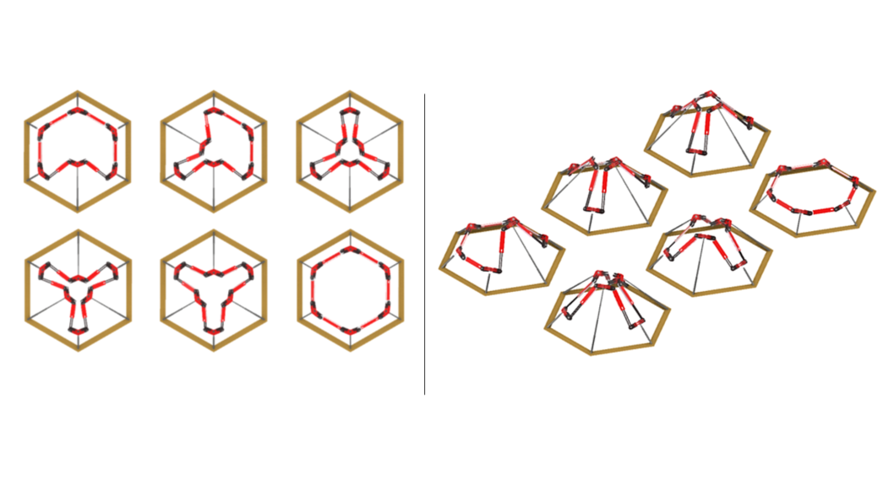
Mechanism study: arm movement + fabric deformation define the aperture geometry.Prototype validation: open/closed states achieved via actuator-driven arms and a tensioned textile skin.
Video demo
Embedded preview from Google Drive. If it doesn’t load, use the direct link below.